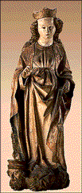

Curriculum Materials: World Mythology
|

Catherine of Alexandria was the niece of a Roman emperor and an Egyptian queen. At her birth a halo of light danced around her head. An exceptionally smart youngster, she studied with seven great scholars. Catherine soon surpassed all others in nobility, beauty, wealth, and knowledge. Her father died when she was only 14, leaving her in charge of the kingdom. Catherine declined, giving up the kingdom in order to pursue her studies. When her loyal subjects begged her to reconsider and to marry, Catherine agreed, but insisted that she would only marry a man who was her social and financial equal. Furthermore, he must be so beautiful that angels would wish to see him, and kind enough to forgive all offenses. Her subjects feared that no one man could fulfill all of these criteria. At this time a religious hermit saw in a vision that the Christian messiah, Jesus, was the husband Catherine sought. The hermit shared this divine message with Catherine and gave her a picture of the baby Jesus with his mother, the Virgin Mary. Upon seeing the child's face, Catherine knew she could love no one else. When Catherine asked the hermit how she could become worthy of Jesus, he instructed her in the tenets of Christianity and baptized her. That night she had a dream in which the baby Jesus placed a wedding ring on her finger. When she awoke she found that the ring was still there. From that moment on Catherine considered herself the bride of Jesus. In the meantime, the Roman emperor Maxentius (mak-SEN-chus) had come to Alexandria. Maxentius persecuted all those who refused to worship the idols in which he believed. Catherine challenged Maxentius. He called in 50 of his greatest advisors to dispute with her, but they were no match for her wisdom and power of argument. She converted them to Christianity. The cruel Maxentius ordered his advisors burned to death, but he was so enchanted by Catherine's beauty that he spared her life. Although he was already married he tried to force Catherine to marry him. When she refused he tried to starve her into submission. Angels came to her dungeon cell and fed her. When Maxentius's wife begged him to have mercy on Catherine, he had his wife put to death and again tried to force Catherine into marriage. Furious at her repeated refusals, Maxentius ordered Catherine tied to four spinning spiked wheels that would tear her apart. A great flame flashed down from the heavens and burned the wheels, and their hot fragments killed Catherine's executioners. Finally Maxentius had Catherine beheaded. Angels carried her body to the top of Mount Sinai. Maxentius soon died, himself condemned to a horrible death.
Hypatia
Saint Catherine Sculpture Altarpiece saints were often carved from linden wood, also known as limewood, which grew in the dense forests of southern Germany and Austria. Sculptors prized the expensive linden wood because its uniform grain enabled them to carve out complex drapery patterns without cracking the wood. People believed that linden wood had magical qualities, and its leaves, seeds, and flowers were used in medicines. Images were thought to be more powerful when carved from this magical wood. Saint Catherine of Alexandria Catherine, renowned for her beauty, has long, wavy hair. Her stocky body and her idealized facial features - small delicate red mouth, small sharp chin, long narrow nose, broad cheeks, and high forehead - are typical of Austrian and German Gothic representations of female saints. Traces of paint indicate that her face was painted creamy white. She wears a fashionable 15th-century ensemble of a high-waisted gown, loose outer cloak, and pointed shoes. Traces of color show that her cloak was once GILDED and the lining was painted blue. The red patches are remnants of the glue used to attach the GOLD LEAF. Catherine delicately lifts the hem of her cape as she steps over Maxentius. The folds of her voluminous drapery are crinkled and brittle. Because of these sharp, angular folds, the late Gothic manner in which she is carved is called the "hard style." Look 2. Where do you see smooth curved lines in this sculpture? (Catherine's face, hair, and hands.) Where do you see straight angular lines? (Catherine's clothing, the figure of Maxentius.) The artist used these two kinds of lines to create contrast in the sculpture. What effect does this contrast have? (Catherine's face stands out because its smooth lines contrast the angular lines of her clothing.) 3. The late Gothic manner in which this sculpture is carved is called the "hard style." What is hard or sharp about it? (The sharp, angular folds of Catherine's clothing.) 4. How big do you think this sculpture is? Discuss the sculpture's function as part of an altarpiece, made to educate the illiterate and to inspire devotion. Does knowing this purpose change your size estimate? Explain. In order for people to see this on an altar, it would have to be large. Show an object or person of similar size to illustrate the large size of this sculpture - 63 inches.
Think 1. Catherine of Alexandria was renowned for her beauty. Do you think the woman represented in this sculpture is beautiful? Why or why not? What is considered beautiful changes over time and is different for each person. Saint Catherine's facial features are typical of German and Austrian Gothic standards of beauty. If you were to carve a sculpture of a beautiful person, would it look different than Saint Catherine? Would any of the features be like Saint Catherine's? 2. Although it is not apparent in the image, the sculptor who carved Saint Catherine hollowed out the sculpture from the back and left the back open and unfinished. Why? (This sculpture was not meant to be viewed "in the round," but rather set against a wall on an altar; the viewer wouldn't see the back. Also, a hollow sculpture is lighter in weight, easier to move, and less likely to crack.) 3. Even though Catherine died at the hands of Maxentius, Europeans during the Middle Ages considered her triumphant. Why? (Catherine represented the virtue of defending one's beliefs, even in the face of death. Her reward for her bravery, according to Christian mythology, was a place in the kingdom of heaven.) 4. The story and sculpture of Saint Catherine tell us about the triumph of good over evil. What other stories can you think of about good overcoming evil? (Cinderella, Snow White, Sleeping Beauty, 101 Dalmatians, the Little Mermaid.) Which other works of art have you seen whose subject is the triumph of good over evil? (Memorial tusk, image 4; Theseus, image 10; Medusa, image 12; Mary Magdalene, image 14; |
{kind=link}